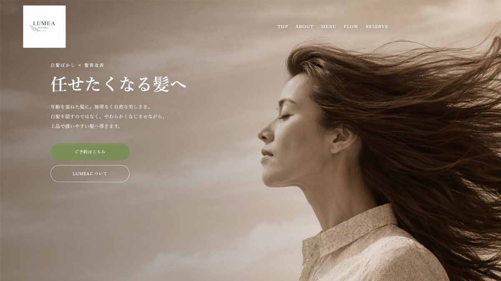

Web Site
LUMEA Hair Clinic
40〜50代女性向けの「白髪ぼかし・髪質改善」特化サロン。

概要
LUMEA Hair Clinicは、「白髪ぼかし」と「髪質改善」を強みとした、 40〜50代女性向け美容室サイトとして制作しました。 落ち着きと清潔感のある世界観を意識し、 大人女性が安心して相談できる印象設計を行っています。
担当範囲
- 企画
- 構成
- デザイン
- コーディング
使用ツール・言語
- HTML / CSS
- JavaScript / jQuery
- Photoshop
- Figma
制作意図
ターゲット層に合わせ、余白を活かしたレイアウトと、 やわらかく上品な色味で構成しました。 また、予約導線やメニュー導線を整理し、 ユーザーが迷わず行動できる設計を意識しています。
工夫した点
スマートフォン表示を意識したレスポンシブ対応や、 ハンバーガーメニューの実装を行いました。 また、写真の見せ方や余白設計によって、 サロンの落ち着いた雰囲気が伝わるよう工夫しています。